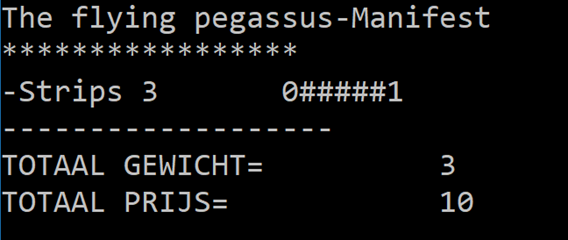
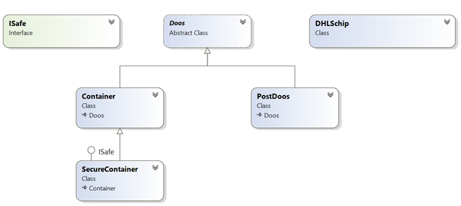
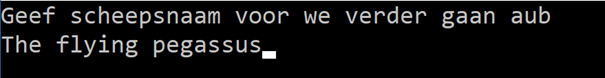
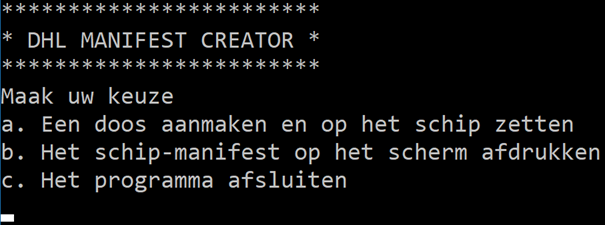
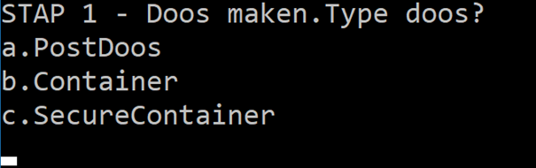
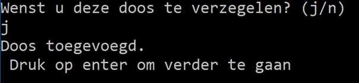
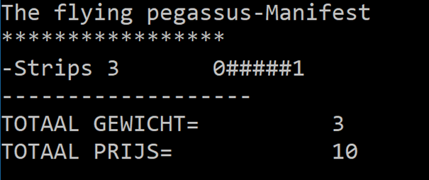

Volgende opgave was de vaardigheidsproefopdracht voor het examen van dit vak (OOP) in juli 2024
Introductie
Je firma werd gevraagd om voor een grote rederij een manifest-generator te maken. Wanneer een schip gevuld wordt met dozen en containers dan moet de kapitein ook steeds een manifest hebben. Op dit document (=het manifest) staat welke lading het schip aan boord heeft.
Het bedrijf biedt verschillende soorten dozen aan die de gebruiker kan gebruiken om z’n pakket mee te verzenden. Afhankelijk van het type doos zal de kostprijs anders zijn. Voorts biedt het bedrijf een SecureContainer aan. Dit is een doos die kan verzegeld worden. Een verzegelde container heeft als extra eigenschappen dat het ten eerste z’n kostprijs niet zal teruggegeven (zodat dieven niet weten wat de waarde van de inhoud is) en het zal ook onthouden hoe vaak externen de kostprijs van de doos wensen te weten komen.

Deel 1: Klassen-diagram (6 punten)
Maak een nieuw project aan en zorg ervoor dat volgende klassen diagram wordt toegepast:

Klasse Doos:
abstract class Doos
{
public Doos(int id)
{
ID = id;
}
public int ID { get; private set; }
public int Gewicht { get; set; }
public string Inhoud { get; set; }
public virtual int KostPrijs
{
get { return Gewicht * 10; }
}
}Klasse Container
De kostprijs van een Container is de “kostprijs van een Doos + 5”.
PostDoos
De kostprijs van een PostDoos is altijd 10. ## Interface ISafe ISafe is een interface ISafe bevat 2 methoden: VerzegelInhoud: * vereist geen parameters en geeft niets terug. GeefAntalLeesAttempts: * vereist geen parameters en geeft een int terug.
Klasse SecureContainer
GeefAantalLeesAttemps() geeft terug hoe vaak de KostPrijs van het object werd uitgelezen via de get’r. VerzegelInhoud(): vanaf je dit aanroept zal de container verzegeld zijn. Een verzegelde container zal 0 als Kostprijs teruggeven in plaats van de effectieve kostprijs. (eens verzegeld kan dit niet meer ongedaan gemaakt worden).
Klasse DHLSchip
Heeft een Lijst van Dozen genaamd vrachtRuim die naar buiten toe beschikbaar is via public get, maar private set.
Heeft een methode VoegDoosToe: * vereist 1 parameter van het type Doos en geeft een bool terug. * zal de doos in de parameter toevoegen aan het Vrachtruim, maar enkel indien het totale gewicht van alle dozen in het vrachtruim niet boven de 10 komt (indien de huidige dozen dus reeds samen 8 wegen, en de nieuw toe te voegen weegt 3 dan zal de doos niet toegevoegd worden): * Indien een doos te zwaar is zal er een Exception opgeworpen worden met de boodschap: “Te zwaar. Doos niet toegevoegd”. * Indien de doos wel werd toegevoegd zal er true terug gegeven worden
Heeft een methode ToonManifest: * Vereist geen parameters en geeft niets terug. * Deze methode aanroepen zal resulteren in het afdrukken van het manifest naar het scherm. De output hiervan wordt besproken in een later deel van deze opgave. ## Deel 2: Manifest output DHLSchip (4 punten) De ToonManifest()-methode van het DHLSchip zal de volgende output genereren: * Hoofding: Naam van het schip * Midden: informatie van de dozen. * Start telkens met een minteken, gevolg door de Inhoud van de doos, het gewicht en de kosptrijs ervan. * Indien de doos een ISafe interface bevat dan zal er achteraan de informatie van de doos ook de uitvoer van GeefAantalLeesAttempts getoond worden (voorafgegaan door 5 ‘hekjes’ (#) * Einde: * Het totaalgewicht van alle dozen samen wordt getoond * De totale prijs van alle dozen wordt getoond: * Per ISafe doos zal er een standaard prijs van 10 worden bijgeteld * Indien de doos Verzegeld is dan zal deze doos dus 0+10 kosten. * Een niet verzegelde doos zal dan z’n effectieve prijs + 10 kosten.
Voorbeeld output Manifest van een schip genaamd ‘The flying pegassus’ (Strips zit in een PostDoos, Goud zit in een verzegelde SecureContainer waarvan de kostprijs 1keer werd uitgelezen en Auto zit in een Container):
The flying pegassus-Manifest
*****************
-Strips 3 30
-Goud 2 0#####1
-Auto 3 35
-------------------
TOTAAL GEWICHT= 8
TOTAAL PRIJS= 75# Deel 3 : Boot manager (4p, waarvan) Maak nu een console-applicatie die toelaat om dozen op een schip te zetten en vervolgens het manifest te tonen. (screenshots van het programma worden achteraan deze opgave getoond)
Als volgt: ## Deel 3a: Bootnaam (0,5 punt) Eerst wordt de schipsnaam eenmalige gevraagd en wordt een nieuw DHLSchip object met die naam aangemaakt. Vervolgens verschijnt het hoofdmenu. ## Deel 3b: HoofdMenu (0,5 punt) Een menu wordt getoond dat steeds zal terugkeren tot de gebruiker het programma afsluit. De gebruiker kan 3 zaken kiezen in het menu a. Een doos aanmaken en op het schip zetten (zie deel 3c). b. Het schip-manifest op het scherm afdrukken (zal ToonManifest van het schip aanroepen). c. Het programma afsluiten.
5.2 VergrendelSnel-methode (2 punten)
Maak in je hoofdprogramma een methode die toelaat om snel alle SecureContainers in een schip te vergrendelen. De methode aanvaard één parameter van het type DHLSchip. Biedt in je applicatie in het hoofdmenu (3b) als 4e optie “Vergrendel alles” om dit voor de gebruiker te doen.
5.3 Bootmanager (2 punten)
Voorzie de mogelijkheid om de gebruiker te laten ingeven om dozen in het VrachtRuim te: * Verwijderen * Verplaatsen * Vervangen * Dupliceren
Appendix: Voorbeeld programma output
Naam schip, gebruiker voert The flying Pegassus in:

Hoofdscherm:

Gebruiker kiest a in hoofdscherm:
In stap 2 heeft de gebruiker “strips” en 3 (als gewicht) ingevoerd.
Gebruiker kiest “j” (om te verzegelen):

Gebruiker komt terug op het hoofdscherm en kiest nu optie b om het manifest te tonen:

Pharaoh pharaoh1 = new Pharaoh("Tuti", -490, -400);
pharaoh1.AddAchievement("Built pyramid");
pharaoh1.AddAchievement("Killed slaves");
Pharaoh pharaoh2 = new Pharaoh("Seth", -550, -490);
pharaoh2.AddAchievement("Killed other slaves");
pharaoh2.AddAchievement("Built small pyramid");
Dynasty dynasty1 = new Dynasty()
{
StartYear = -600,
EndYear = -500
};
try
{
Console.WriteLine($"Adding {pharaoh1.Name}");
dynasty1.AddPharaoh(pharaoh1);
}
catch (Exception e)
{
Console.WriteLine(e.Message);
}
try
{
Console.WriteLine($"Adding {pharaoh2.Name}");
dynasty1.AddPharaoh(pharaoh2);
}
catch (Exception e)
{
Console.WriteLine(e.Message);
}
Console.WriteLine($"\nDuration dynasty {dynasty1.Name}:{dynasty1.CalculateDuration()}");
Console.WriteLine("\nEvents from this dynasty:");
dynasty1.ShowEvents();class Pharaoh
{
public Pharaoh(string nameIn, int reignStartIn, int reignEndIn)
{
Name = nameIn;
if (reignStartIn > reignEndYear)
{
ReignStartYear = reignEndIn;
ReignEndYear = reignStartIn;
}
else
{
ReignStartYear = reignStartIn;
ReignEndYear = reignEndIn;
}
}
public Pharaoh(string nameIn, int reignStartIn) : this(nameIn, reignStartIn, 0)
{
}
public string Name { get; set; }
private int reignStartYear;
public int ReignStartYear
{
get { return reignStartYear; }
set
{
if (value < 0)
reignStartYear = value;
}
}
private int reignEndYear;
public int ReignEndYear
{
get { return reignEndYear; }
set
{
if (value < 0 && value > ReignStartYear)
reignEndYear = value;
}
}
private List<string> achievements = new List<string>();
public int CalculateReignLength()
{
return Math.Abs(ReignStartYear - ReignEndYear);
}
public void AddAchievement(string achievement)
{
achievements.Add(achievement);
}
public void ShowAchievements()
{
foreach (var achievement in achievements)
{
Console.WriteLine(achievement);
}
}
}
class Dynasty
{
public string Name { get; set; }
private int startYear;
public int StartYear
{
get { return startYear; }
set
{
if (value < 0)
startYear = value;
}
}
private int endYear;
public int EndYear
{
get { return endYear; }
set
{
if (value < 0 && value > StartYear)
endYear = value;
}
}
private List<Pharaoh> pharoahs = new List<Pharaoh>();
public void AddPharaoh(Pharaoh pharaohToAdd)
{
if (pharaohToAdd.ReignEndYear < this.StartYear || pharaohToAdd.ReignStartYear > this.EndYear)
{
throw new Exception("This Pharaoh has no overlapping reign period with this dynasty");
}
pharoahs.Add(pharaohToAdd);
}
public int CalculateDuration()
{
return Math.Abs(StartYear - EndYear);
}
public void ShowEvents()
{
ShowData(true);
}
public void ShowPharaohs()
{
ShowData(false);
}
private void ShowData(bool showAchievements)
{
foreach (var pharaoh in pharoahs)
{
Console.WriteLine($"{pharaoh.Name}");
if (showAchievements)
pharaoh.ShowAchievements();
}
}
}